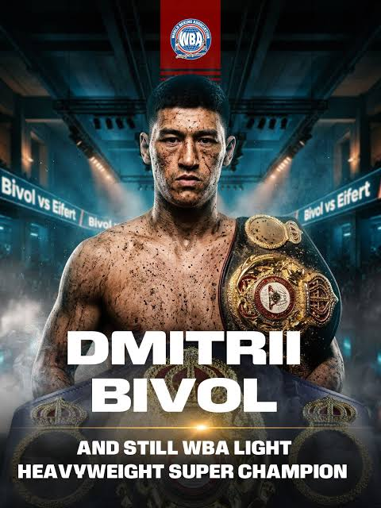

Dmitry Bivol Dmitry Bivol is a Russian professional boxer who competes at light heavyweight (175 lb / 79.4 kg). He was born on December 18, 1990, in Tokmak, Kyrgyzstan, and later moved with his family to St. Petersburg, Russia. He began boxing at age six. Key facts Full name: Dmitry Yuryevich Bivol Born: December 18, 1990 Birthplace: Tokmak, Kyrgyzstan Height: 6 ft (183 cm) Reach: 72 in (183 cm) Stance: Orthodox Professional record: 24 wins, 1 loss, 12 KOs E ESPN +1 Weight class: Light heavyweight Amateur record: 268–15 Major amateur achievement: 2013 World Combat Games gold medalist B BoxRec Career highlights Bivol turned professional in 2014 and quickly established himself as one of the world's best 175-pounders. He won the WBA light-heavyweight title in 2017 and successfully defended it many times. B Bivol Boxing His most famous victory came in May 2022, when he defeated Canelo Álvarez by unanimous decision. Bivol's disciplined jab, footwork, distance control, and combination punching frustrated Canelo throughout the fight. E ESPN He later defeated Gilberto "Zurdo" Ramírez by unanimous decision in November 2022, another major victory over an undefeated former world champion. E ESPN The Beterbiev rivalry One of the most important chapters of Bivol's career has been his rivalry with Artur Beterbiev. Their first fight took place in October 2024 for the undisputed light-heavyweight championship. Beterbiev won by majority decision, handing Bivol his first professional defeat. W Wikipedia They immediately had a rematch in February 2025. This time Bivol won by majority decision, becoming the undisputed light-heavyweight champion in the four-belt era. The judges scored it 114–114, 116–112 and 115–113. W Wikipedia That victory was particularly significant because Bivol became one of the very few fighters to defeat an undisputed champion during the modern four-belt era. W Wikipedia Fighting style Bivol is known more for technical boxing than raw knockout power. His biggest strengths are: Excellent jab Precise combinations Exceptional footwork Maintaining distance High-volume, efficient punching Strong defensive positioning Ability to control the pace of a fight His victory over Canelo is a particularly good example of this style: rather than relying on one-punch power, Bivol consistently controlled the range and landed combinations while minimizing Canelo's opportunities
.jpg)
Canelo Álvarez Canelo Álvarez — born Saúl Álvarez Barragán on July 18, 1990, in Guadalajara, Mexico. He is one of the most successful Mexican boxers of his generation. W Wikipedia +1 Age: 36 Nationality: Mexican Height: about 5'8" (173 cm) Reach: about 70.5" (179 cm) Stance: Orthodox Professional record: 63 wins, 3 losses, 2 draws, with 39 KOs. P PBC Boxing Weight classes: He has won world titles in four divisions—light middleweight, middleweight, super middleweight and light heavyweight. E ESPN Biggest achievements Canelo became the first undisputed men's super-middleweight champion in the four-belt era in 2021. He has also held championships in three other weight classes. W Wikipedia Some of his most famous opponents include: Floyd Mayweather Jr. — Canelo's first professional loss. Gennady Golovkin (GGG) — fought Canelo twice; their first fight was a draw, and Canelo won the rematch. Miguel Cotto Sergey Kovalev Caleb Plant Dmitry Bivol — Canelo lost by unanimous decision in 2022. Jermell Charlo Jaime Munguía Terence Crawford 🥊 Who is Canelo? Saúl “Canelo” Álvarez Barragán was born July 18, 1990, in Guadalajara, Jalisco, Mexico. His nickname “Canelo” means “cinnamon”, referring to his reddish hair. He turned professional extremely young, at 15 years old, and eventually became one of the biggest stars in boxing. He is an orthodox fighter, approximately 5'7½" (171 cm) tall with a 70½-inch (179 cm) reach. His professional record is currently 63 wins, 3 losses, 2 draws, with 39 wins by knockout. E ESPN +1 🏆 Championships One of Canelo's biggest achievements was becoming the first undisputed men's super-middleweight champion of the four-belt era in 2021. He has won world championships in four weight classes: Light middleweight — 154 lb Middleweight — 160 lb Super middleweight — 168 lb Light heavyweight — 175 lb He has also been a unified champion in multiple divisions. W Wikipedia His run at 168 pounds has been particularly important to his legacy. He became undisputed there after defeating Caleb Plant in 2021. ⚔️ His biggest fights Floyd Mayweather Jr. Canelo fought Mayweather in 2013 when Canelo was only 23. Mayweather won by majority decision. It was Canelo's first professional defeat, and it became an important learning experience in his career. Gennady Golovkin — “GGG” The Canelo–Golovkin rivalry is one of the defining rivalries of modern boxing. Their first fight in 2017 ended in a draw. Canelo won their 2018 rematch by majority decision. Many fans still debate the scoring of both fights, particularly the first one. Miguel Cotto Canelo defeated Cotto by unanimous decision in 2015 to win the WBC middleweight championship. Sergey Kovalev In 2019, Canelo moved up to light heavyweight and defeated Kovalev by 11th-round knockout to win the WBO title. That was a particularly impressive achievement because Kovalev was a much larger fighter. Caleb Plant In 2021, Canelo stopped Plant in the 11th round. The victory made Canelo the undisputed super-middleweight champion. Dmitry Bivol Bivol handed Canelo his second professional loss in 2022. Canelo moved up to 175 pounds but struggled against Bivol's size, jab, movement and disciplined defense. Terence Crawford This is currently one of the most important fights of Canelo's career. On September 13, 2025, Canelo faced Terence “Bud” Crawford at Allegiant Stadium in Las Vegas. Crawford moved up two weight classes and defeated Canelo by unanimous decision, with scores of 116-112, 115-113 and 115-113. Crawford became undisputed super-middleweight champion. R Reuters +1 That loss ended Canelo's run as undisputed champion at 168 pounds. 💥 What makes Canelo so good? Canelo isn't simply a power puncher. His greatest strengths include: Body punching: One of his trademarks. He attacks the ribs and liver extremely effectively. Counterpunching: He is excellent at making opponents miss and immediately returning with powerful combinations. Head movement: Particularly his upper-body movement and ability to slip punches at close range. Power: He has 39 professional knockouts. Defense: His ability to block, slip and roll with punches improved substantially as his career progressed. Ring IQ: Canelo is very good at studying an opponent and changing his tactics during a fight. Experience: He has fought elite opposition across four weight divisions. One of the most interesting things about Canelo is that his style evolved. Early in his career he was more aggressive and willing to throw combinations constantly. Later, he became more patient, relying heavily on counters, defense and strategically timed power shots.